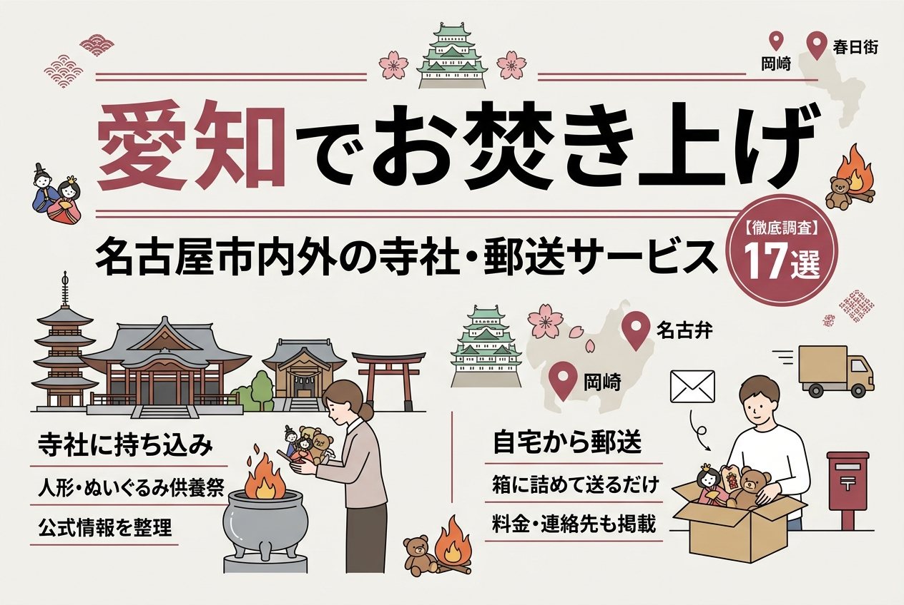
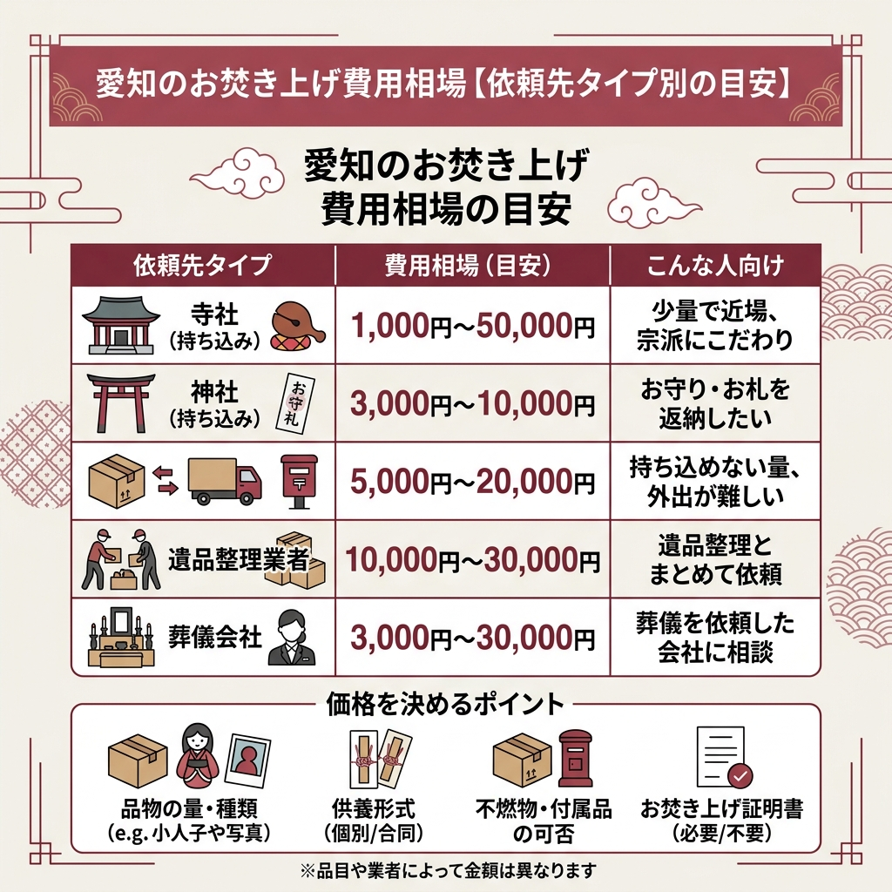
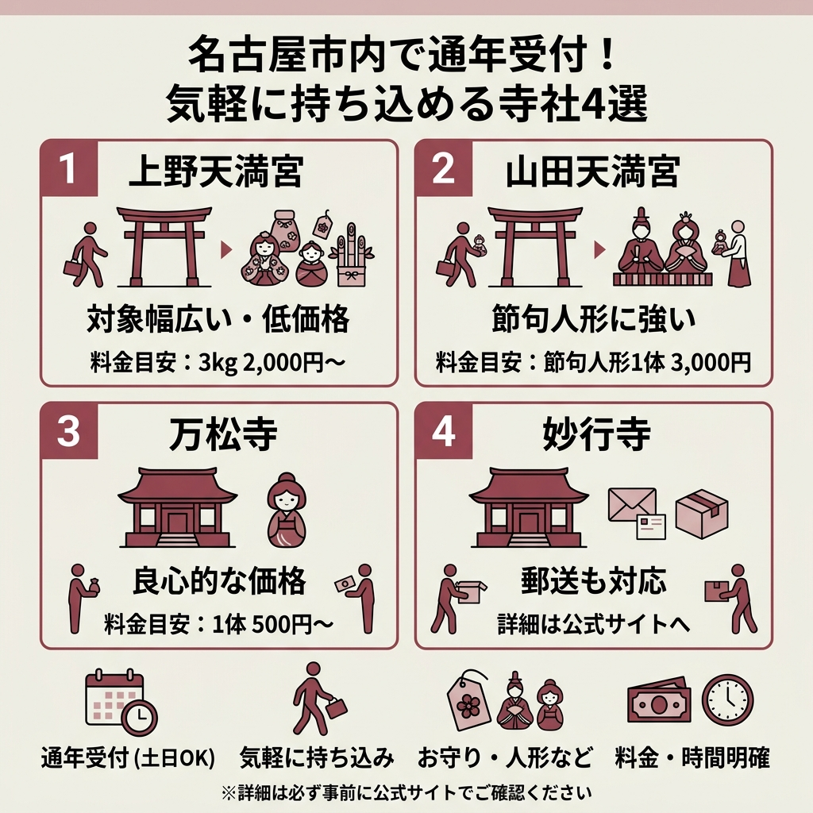
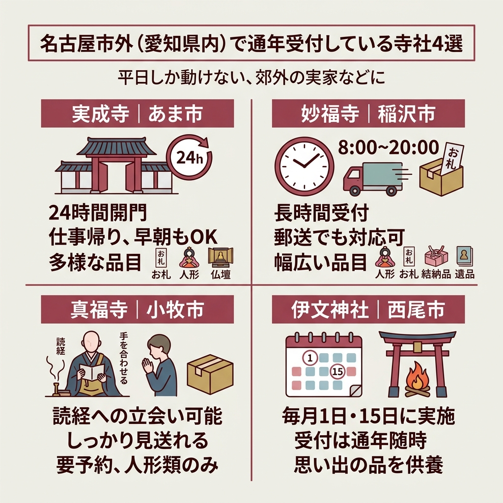
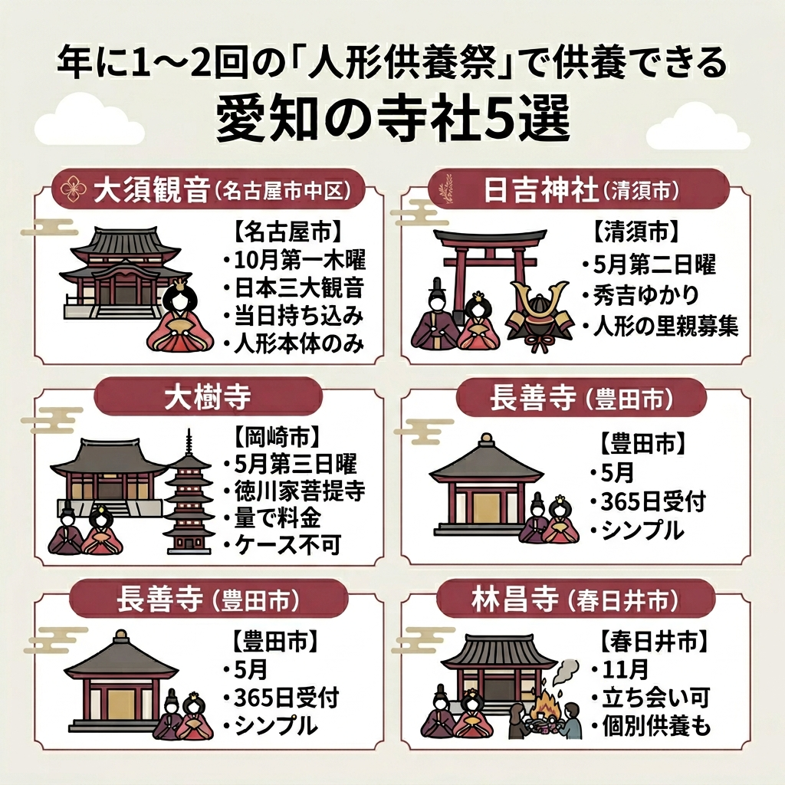
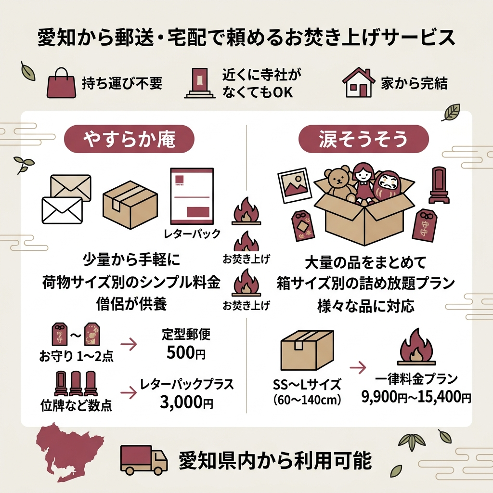
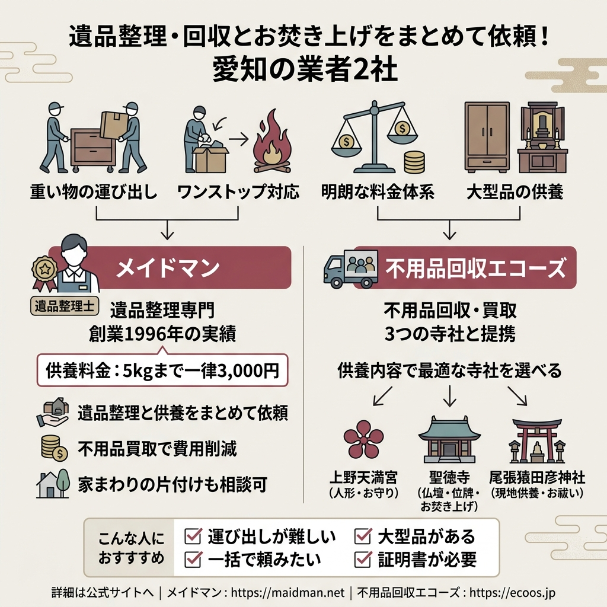
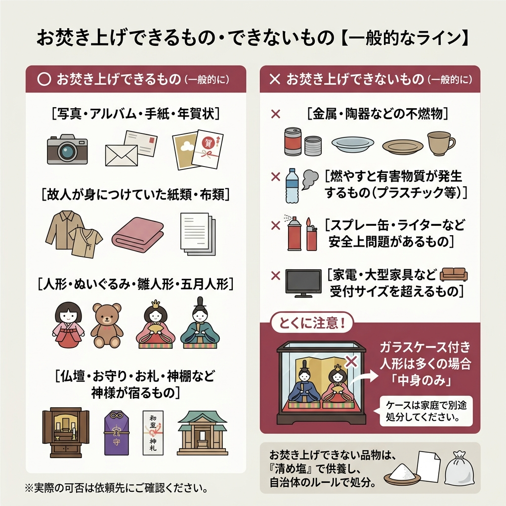
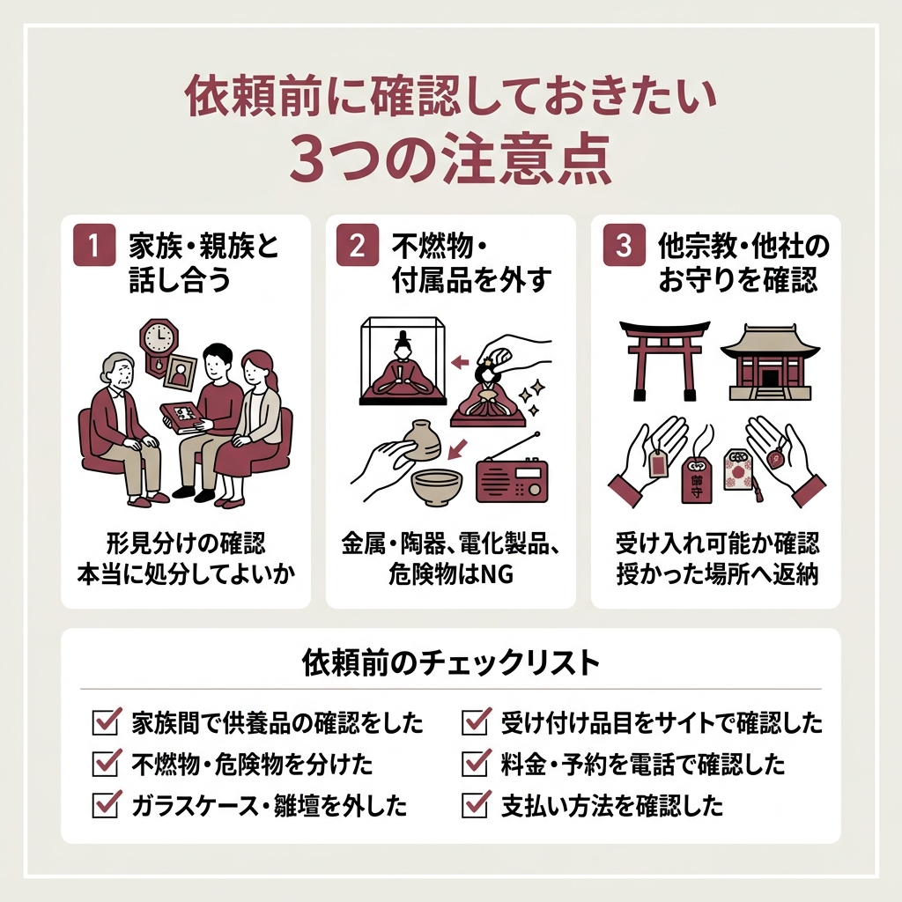

愛知でお焚き上げを依頼するには？名古屋市内外の寺社・郵送サービス17選

「実家に眠る雛人形やぬいぐるみを、ゴミとして捨てるのは気が引ける」。そんな気持ちを抱える愛知県在住の方に向けて、お焚き上げを依頼できる寺社・サービスを徹底的に調べました。
名古屋市内で気軽に持ち込める寺社から、岡崎・春日井など県内各地の年に1度の人形供養祭、そして自宅から箱で送るだけの郵送サービスまで。それぞれの料金・受付時期・連絡先を、公式情報に沿って整理しています。
結論を先に言うと、急ぎで少量を処分したいなら名古屋市内の通年受付の寺社、量が多いなら郵送サービス、遺品整理ごとお願いしたいなら遺品整理業者、というのが大まかな住み分けです。
母の遺品整理で雛人形やぬいぐるみが大量に出てきました。愛知ではどこに頼めばいいの？
量や種類で答えは変わります。少量なら名古屋市内のお寺、量が多いなら郵送の詰め放題、遺品整理と同時なら専門業者という選び方が現実的ですよ。
愛知のお焚き上げは「持ち込み」と「郵送」の2系統に大きく分かれる
愛知県内でお焚き上げを依頼する方法は、大きく分けて2つの系統があります。
1つは寺社に直接品物を持ち込む方法。もう1つは段ボール箱や封筒に入れて郵送する方法です。
どちらを選ぶかは、品物の量、住んでいる場所、急いでいるかどうかで決まります。
お焚き上げとは「想いのこもった物を火で天に還す」儀式
お焚き上げとは、役割を終えたお札やお守り、人形、写真、思い出の品などを神聖な火で焚き上げ、天に還すための供養儀式のこと。
古来から日本では、長く大切にしてきた物には魂が宿るとされてきました。
名古屋市岩塚の妙行寺は「火を使った浄化」と説明し、あま市の実成寺は「浄梵祭とも称し、不要になった愛用品などを天に還すための儀式」と公式サイトで定義しています。
つまり、ただ捨てるのではなく、感謝の気持ちで区切りをつけるための行為だと考えてよさそうです。
愛知県内の依頼先は大きく4タイプ
調べていくと、愛知県内でお焚き上げを依頼できる相手は次の4タイプに分類できます。
- ① 通年で持ち込みを受け付けている寺社（名古屋市内が中心）
- ② 年1〜2回の人形供養祭・人形供養会で受け付ける寺社
- ③ 全国対応の郵送・宅配お焚き上げサービス
- ④ 遺品整理・不用品回収業者の供養オプション
「近所のお寺に持っていく」だけが選択肢ではないと知っておくと、選び方の幅が一気に広がります。

愛知のお焚き上げ費用相場【依頼先タイプ別の目安】
「結局いくらかかるの？」というのが一番気になるところ。
名古屋市の遺品整理業者メイドマンが公開している依頼先別の費用相場をもとに、ざっくりした目安をまとめました。
少量の御守り・写真ならワンコイン台から、仏壇まるごとの閉眼供養なら数万円。「依頼先のタイプ」と「品物の量・種類」で価格はかなり振れます。
| 依頼先タイプ | 費用相場 | こんな人向け |
|---|---|---|
| 寺社（持ち込み） | 1,000円〜50,000円 | 少量で近場、宗派にこだわりがある |
| 神社（持ち込み） | 3,000円〜10,000円 | お守り・お札を返納したい |
| お焚き上げ専門業者（郵送） | 5,000円〜20,000円 | 持ち込めない量、外出が難しい |
| 遺品整理業者 | 10,000円〜30,000円 | 遺品整理とまとめて依頼したい |
| 葬儀会社 | 3,000円〜30,000円 | 葬儀を依頼した会社に相談したい |
※上記はメイドマンが公開している費用目安をまとめたものです。寺社や業者によって金額は異なります。
金額だけでなく、対応してもらえる品目の幅も大切な比較ポイントです。

名古屋市内で通年受付している寺社4選｜気軽に持ち込めるのが強み
「土日にちょっと立ち寄って預けたい」という人にいちばん向くのが、名古屋市内で通年受付している寺社です。
ここでは、人形・お守り・思い出の品を1年を通して受け付けている市内の4寺社を紹介します。受付時間と料金体系がはっきりしているので、初めての人でも依頼しやすいラインアップです。
家族の都合で土日しか動けません。それでも受け付けてもらえますか？
紹介する4寺社はどれも通年受付です。ただし林昌寺や万松寺のように曜日や時間帯で運用が変わる場所もあるので、必ず事前に確認してから行きましょう。
上野天満宮｜名古屋市千種区（3kgで2,000円から）
結論から言うと、名古屋市内で通年・低価格で持ち込みやすい代表格が上野天満宮です。
上野天満宮は「名古屋三大天神」の1つに数えられる神社で、平安時代中期に陰陽師・安倍晴明の一族が住み、菅原道真公を祀ったことが起源と伝わります。受験シーズンには合格祈願の参拝者が県内外から訪れる学問の神様としても知られた場所です。
人形供養は通年で受け付けていて、対象は幅広め。ぬいぐるみ、雛人形、五月人形のほか、ランドセル、結納品、写真などの思い出の品も預けられます。雛人形・五月人形の付属品（お道具、段飾り等）の金属製・陶器製も受付可とされている点はめずらしいです。
- 3kgまで2,000円と低価格スタート
- 1kg増えるごとに200円という分かりやすい加算ルール
- 金属・陶器製の人形付属品も受付可
- 通年受付（12/25〜1/25のみ受付不可）
ただし、段ボール・ガラスケース・アルバム台紙・位牌は供養できません。持ち込む際は、紙袋などに入れ、金属製や陶器製のものは袋を分ける必要があります。一度受付したものは返却不可なので注意です。
住所は〒464-0094 愛知県名古屋市千種区赤坂町4-89、電話は052-711-6610。受付時間は朝9時から夕方5時までです。詳細は公式サイト（http://www.tenman.or.jp）で確認してください。
山田天満宮｜名古屋市北区（節句人形1体3,000円）
名古屋三大天神の2つ目、というポジションが山田天満宮です。1672年、尾張徳川家二代目藩主の徳川光友が、尾張藩の学問祈願所と名古屋城の鬼門守護神として太宰府天満宮から菅原道真の神霊を迎え、社殿を創建したのが始まりとされています。
こちらは年始年末を除き通年で人形供養を受け付けていて、神職の方が丁寧に供養してくれるとのこと。
料金体系は、節句人形1体または一式が3,000円。ぬいぐるみ・おもちゃの人形・こけしなどは、1体〜45リットルのビニール袋3袋までが3,000円。1袋増えるごとに1,000円の加算という仕組みです。
住所は〒462-0813 愛知県名古屋市北区山田町3-25、受付時間は9:00〜17:00。一度納めたものは返却不可です。詳しくは公式サイト（http://tenman.jp）をご確認ください。
万松寺｜名古屋市中区（1体500円から）
愛知県内で人形供養が1体500円。これは他の寺社と比べてもかなり良心的な価格帯です。万松寺は1540年に織田信長の父・織田信秀が織田家の菩提寺として建立した歴史ある寺院で、信長が父の葬儀の席で仏前に抹香を投げつけたという逸話が残っているお寺としても知られています。
この寺院の特徴は、なんといっても1体500円という良心的な供養料。人形供養は随時受け付けていて、納められた人形は毎月18日に供養・焼納されます。
1kg毎に200円が追加される加算ルールで、個別供養を希望する場合は5,000円。雛人形など数量が多い場合は別途相談可とのことです。
燃えない材質の人形・人形ケース・雛壇などは不可です。住所は〒460-0011 愛知県名古屋市中区大須3-29-12。詳細は公式サイト（https://www.banshoji.or.jp）にあります。大須観音と同じ大須エリアなので、観光ついでに立ち寄りやすい立地です。
妙行寺｜名古屋市中村区（郵送も対応する数少ない寺院）
 出典: myougyou-ji.jp
出典: myougyou-ji.jpもし「処分したいものが多すぎて、何でも預けられる場所はないのか」と探しているなら、妙行寺は有力な候補です。中村区岩塚にあるこのお寺は1586年に開山された日蓮宗の寺院で、「火を使った浄化」をお焚き上げの意味として明確に説明している、わかりやすい姿勢が特徴です。
受け付け品の幅がとにかく広く、写真・アルバム・人形・思い出の品・お守り・お札・仏壇仏具・愛用品（財布、靴、時計、メガネなど）に加え、心霊写真や「縁起の悪い物」「何か嫌な感じがする物」まで対応してくれます。
料金の目安は次の通りです（公式サイトより。「お気持ちで構いません」とのスタンス）。
- お札・お守り：1,000円〜
- 写真・手紙：1,000円〜
- 財布（一つ）：2,000円〜
- 人形（一体）：2,000円〜
- 遺品：5,000円〜
- 数珠など：3,000円〜
- 仏具・神具：5,000円〜
- 位牌：3,000円〜
- 仏壇：10,000円〜
- いわくの有る物：10,000円〜
遠方の方は郵送でも依頼可能。郵送先は〒453-0836 愛知県名古屋市中村区五反城町3-10 伊藤維光宛です。郵送時の供養料はお振込み・現金書留・定額小為替で支払う形になります。
振込先は愛知銀行 岩塚支店 普通345600 ミヨウギヨウジ。電話は052-412-0567で、LINE（@pnh4218u）からの連絡もOK。郵送でいただいた供養の様子は動画で配信もしてくれるとのことで、これは珍しいサービスです。詳しくは公式サイト（https://myougyou-ji.jp）から。

名古屋市外（愛知県内）で通年受付している寺社4選
市外でも、いつでも依頼を受け付けてくれる寺社は意外と多くあります。「実家が郊外」「平日しか動けない」という人にぴったりです。
ここでは、あま市・稲沢市・小牧市・西尾市の4寺社を紹介します。料金の幅や受付方法に違いがあるので、自分の状況に合うかチェックしてみてください。
実成寺｜あま市（24時間開門の珍しい寺院）
「平日昼間しか動けない」「仕事帰りでないと無理」という人にこそ知ってほしいのが、あま市の実成寺（實成寺）です。もともと真言宗の寺でしたが、日蓮宗の宗祖・日蓮聖人の弟子である日妙上人が隠居して日蓮宗に改め、1319年に創建したとされる古刹。国の有形文化財に指定された本堂は1494年に造営されたものです。
このお寺の最大の特徴は、門を24時間365日開いているという点。仕事帰りでも早朝でも、自分の都合に合わせて参拝・持ち込みができるのは助かります。
人形だけでなく、仏壇・仏具、お守り・お札なども随時受け付け。供養料の目安は公式サイトに細かく記載されていて、実成寺ならではの体系がわかりやすく整理されています。
| 品目 | 供養料の目安 |
|---|---|
| お札・塔婆 | 1,000円〜 |
| 思い出品（一箱5,000円相当） | 1,000円〜 |
| 人形・ぬいぐるみ（45L袋） | 3,000円〜 |
| 仏具・神具 | 5,000円〜 |
| 位牌・仏像（一体） | 10,000円〜 |
| 仏壇（一体） | 20,000円〜 |
仏壇の引き取りは別途20,000円（精抜・車料込み）が必要です。希望者は供養に参列することも可能とのことなので、大切な品をしっかり見送りたい方にも向いています。
住所は〒490-1113 愛知県あま市中萱津南宿254。公式サイトはhttp://www.jitsujoji.jpです。事前連絡は念のためしておきましょう。
妙福寺｜稲沢市（朝8時から夜8時まで対応）
受付時間が朝8時から夜20時まで。これだけで「会社帰りでも余裕で間に合う」と分かります。妙福寺は1550年に延妙院日基上人によって創建され、450年以上の歴史を誇る稲沢市の日蓮宗の寺院です。
こちらの強みは、人形以外の幅広い品目に対応している点と、郵送依頼も可能という柔軟さ。羽子板、達磨、結納品、盆提灯、ぬいぐるみ、おもちゃ、お守り、お札、しめ飾り、遺品、形見まで受け付けています。雛人形の毛氈やぼんぼり、五月人形のこいのぼりやかぶとといった付属物も一緒にOK。
料金は1体につき1,000円、45リットルのビニール袋1袋で5,000円という二本立ての料金設定です。
- 受付時間が朝8時〜夜20時とかなり長い
- 木・鉄・陶器などどんな材質も受付可
- 郵送でも対応してくれる
- 1体1,000円から少量でも気軽に依頼できる
ただし持ち込みは要予約。ガラスケースは基本的に不可ですが、どうしても、という時は要相談。郵送の場合は宅配便または郵パックなどで発送し、供養料は封筒に入れて梱包します。住所は〒492-8402 愛知県稲沢市千代町東郷37、公式サイトはhttp://myofukuji.org/index.htmです。
真福寺｜小牧市（読経への立会いができる）
「最後にちゃんと送り出してあげたい」。そんな気持ちに応えてくれるのが、読経の立会いを選べる小牧市の眞福寺です。1635年に開山された臨済宗・妙心寺派のお寺で、本尊の聖観世音菩薩は平安時代の作とされ、円空上人制作の秘仏・観世音菩薩像があることでも知られています。
こちらの特徴は、読経への立会いの有無を選べる点。「最後にちゃんと見送りたい」というニーズに応えてくれます。
料金は段ボール1箱（種類・大きさの規定なし）あたり、立会いなしで3,000円、立会いありで6,000円。立ち会いは読経のみで、お焚き上げ自体には立ち会えません。
受け付けは雛人形・五月人形・ぬいぐるみ・民芸品を含む人形類のみ。雛台、飾りの道具、ガラスケースは不可です。電話または問い合わせフォームから要予約となっています。
住所は〒485-0825 愛知県小牧市下末1060、公式サイトはhttps://shimpukuji.amebaownd.com。供養料はお布施と書いた白封筒に入れて渡すマナーです。
伊文神社｜西尾市（毎月1日・15日にお焚き上げ）
 出典: www.ibunjinja.net
出典: www.ibunjinja.net毎月1日と15日。月に2回もお焚き上げをしている神社は、愛知県内でも珍しい存在です。伊文神社は1150年前の平安時代に第五十五代文徳天皇の皇子・八條院宮が渥美郡伊川津から随遷したと伝わる西尾市の古社で、西尾城下町の産土神として地元の信仰を集めてきました。
毎月1日と15日に思い出のある品の供養・お焚き上げを行なっていて、受付は通年随時という運用です。
お札・お守り・人形・ぬいぐるみ・雛飾り・五月人形・思い出のある写真や品物・長く使った道具などに対応し、感謝の祝詞をあげてお焚き上げしてくれます。
料金は段ボール1箱につき2,000円〜。箱のサイズによっては要相談です。
持ち込みの場合は、社務所開所時間の午前9時〜午後5時に直接持参。一度で運べない量の場合は社務所前まで車を入れてOKという親切設計です。ただし平日は不在の場合もあるため、事前連絡を推奨。
連絡先は伊文神社社務所、住所は〒445-0822 愛知県西尾市伊文町17、電話は0563-57-2838、Emailはibun@katch.ne.jp。郵送でも対応していて、申込みフォーム・電話・メールから依頼できます。公式サイトはhttps://www.ibunjinja.netです。

年に1〜2回の「人形供養祭」で供養できる愛知の寺社5選
「来月までに何とかしなくちゃ」というほど急ぎでない人には、年に1〜2回の人形供養祭・人形供養会という選択肢もあります。お祭りという扱いなので、雰囲気を含めて見送りたい人にも向いています。
愛知県内には、戦国武将ゆかりの古刹が数多く残っており、それぞれ独自の日程で供養祭を開催しています。ここでは大須観音・日吉神社・大樹寺・長善寺・林昌寺の5寺社を紹介します。
春や秋の供養祭って、いつ申し込めばいいんですか？
多くの寺社は「通年で受付」して、決まった日にまとめて供養します。雛人形なら1〜4月、五月人形なら9〜11月など、シーズン直後に持ち込まれる方が多いですよ。
大須観音｜名古屋市中区（10月第一木曜の人形供養祭）
 出典: otakiagejinja.com
出典: otakiagejinja.com日本三大観音の一つに数えられる大須観音。正式名称は「北野山 真福寺 寶生院（宝生院）」で、学業成就・合格祈願の参拝者が国内外から訪れる名古屋の人気観光スポットです。
毎年10月の第一木曜日10:00〜、愛知県人形玩具工業協同組合・名古屋雛人形卸商業協同組合・中部人形節句品工業協同組合の主催で「人形供養祭」が開催されています。
供養料はお布施として3,000円程度〜。受付は当日持ち込みです。ひな段やガラスケース等の付属品、道具類、その他燃えないものは受付不可なので、人形本体だけを持参しましょう。
住所は〒460-0011 愛知県名古屋市中区大須2-21-47。公式サイトはhttp://www.osu-kannon.jp/です。
日吉神社｜清須市（5月第二日曜・人形の里親募集も）
歴史好きには刺さるエピソードのある神社です。日吉神社は山王（山の神）を祀り、病や厄災を除く目的で771年ごろに建立されたと伝わる歴史ある神社。豊臣秀吉との縁が深く、生母が日吉神社に祈願して秀吉が生まれたため、幼名を「日吉丸」と呼ぶようになったという伝承が残ります。
人形供養は通年で受け付け、毎年5月の第二日曜日10:00〜の「人形供養祭」で焼納される運用です。受け入れ可能な人形は、雛人形・五月人形・日本人形・着せ替え人形・フランス人形・こけし・ぬいぐるみなど、幅広め。
料金は5,000円程度〜、量によって応相談です。持ち込みは通年9:00〜16:00で受け付けています。
住所は〒452-0942 愛知県清須市清洲2272。公式サイトはhttp://www.hiyoshikami.jp/jinjasyokai/gosaisin.htmlです。
大樹寺｜岡崎市（徳川家ゆかりの菩提寺）
徳川家康公ゆかりのお寺で人形を見送れる、というのは岡崎ならではの体験です。大樹寺は1475年に松平家4代親忠公が創建した松平家・徳川将軍家の菩提寺で、「東海地方随一の美しさ」と称えられる多宝塔など、多数の重要文化財があることで有名。徳川家康公の木像や徳川歴代将軍の等身大の位牌もこちらに安置されています。
岡崎人形組合の主催で毎年5月第三日曜11:00〜「人形供養会」を開催しており、受付は通年9:00〜16:00で行なっています。
供養料は標準雛壇飾り1組分（家庭用45リットルのゴミ袋相当）の段ボール1箱で3,000円。量によって追加料金が発生します。ガラスケース、陶器、鉄、金属類は受付不可ですが、人形の付属品（手に持った小道具）は受付可です。
住所は〒444-2121 愛知県岡崎市鴨田町広元5-1。公式サイトはhttps://daijuji.jpです。
長善寺｜豊田市（毎年5月、365日受付）
受付365日、お志3,000円から。シンプルさが魅力です。
豊田市の長善寺は江戸時代初期の1625年に創立された浄土宗の寺で、毎年5月に「人形供養」を開催しています。住所は〒470-0348 愛知県豊田市貝津町町屋77、公式サイトはhttps://toyota-chouzenji.com/。詳細は問い合わせベースとのこと。
林昌寺｜春日井市（11月開催で立ち会い可）
林昌寺は室町時代に創設された臨済宗妙心寺派の寺院。本尊は薬師如来、正式名は「牛臥山林昌寺」です。
こちらでは通年で人形供養を行なっており、毎年11月開催の「人形供養会」では立ち会いが可能。「ちゃんと最後を見届けたい」というニーズに応えてくれます。
料金は、ビニール袋2袋程度・ダンボール2箱程度で3,000円。2箱（袋）目以降は各1,000円、個別供養を希望する場合は+10,000円。
住所は〒487-0002 愛知県春日井市外之原町2692。公式サイトはhttps://www.rinshoji.or.jp/です。供養料はお釣りのいらないように用意してくださいとのこと。

愛知から郵送・宅配で頼めるお焚き上げサービス2社
「量が多すぎて持ち運べない」「外出が難しい」「近くに合う寺社がない」といった人には、郵送・宅配で完結するお焚き上げサービスが現実的な選択肢になります。
ここでは、僧侶が運営するやすらか庵と、株式会社終楽が運営する涙そうそうの2社を紹介します。どちらも愛知県から問題なく利用できます。
やすらか庵｜全国対応、定型郵便500円から
 出典: yasurakaan.com
出典: yasurakaan.com引き出しに眠っている古いお守り1〜2点だけを送りたい。そんな少量ニーズに対応してくれるのが、やすらか庵の定型郵便プランです。運営は僧侶で、年に二回の立ち会いができるお焚き上げ供養を開催しつつ、毎日供養の読経を行なっているとのこと。
このサービスの最大の魅力は、料金体系が荷物のサイズで決まっていてシンプルなこと。郵便から宅配便まで、サイズ別に細かく料金が用意されています。
| 送付方法・サイズ | 料金 |
|---|---|
| 定型郵便（50gまで） | 500円 |
| スマートレター | 1,000円 |
| A4郵便・レターパックライト | 2,000円 |
| レターパックプラス | 3,000円 |
| 宅配便80サイズ | 5,000円 |
| 宅配便120サイズ | 7,500円 |
| 宅配便160サイズ | 10,000円 |
引き出しに眠っている古いお守り1〜2点なら定型郵便で500円、位牌3つくらいまでならレターパックプラスで3,000円、と細かく選べるのは便利です。
支払いはインターネット決済または振込から選べます。160サイズについては「数が増えるほどお得になる割引」があるとのことなので、遺品整理での大量依頼にも向いています。
申し込み（メール・電話・フォーム）
サイズに合った申込みフォームから連絡。
支払い（ネット決済または振込）
振込は入金完了後に発送。
梱包・発送
段ボールやレターパックは自分で用意。送料は申込者負担。
お焚き上げ供養
仏具など燃えないものが入っていてもOK。
公式サイトはhttps://yasurakaan.com/burning-talismans/aichi/。発送方法やサイズ別の申込ページが用意されています。
涙そうそう（終楽）｜詰め放題プランで大量品向き
 出典: kakuyasuso.jp
出典: kakuyasuso.jp「箱に入る分だけ詰めていい」は、量で困っている人にとって本当に救いのある仕組みです。涙そうそうは株式会社終楽が運営するお焚き上げサービスで、サイズ別の詰め放題プランが特徴。同じサイズの箱なら何個入れても料金は変わりません。
| 箱サイズ | 3辺合計 | 料金（税込） |
|---|---|---|
| SS | 60cm以内 | 9,900円 |
| S | 1m以内 | 11,000円 |
| M | 1.2m以内 | 13,200円 |
| L | 1.4m以内 | 15,400円 |
1.4mを超える場合は要相談です。送料・振込料はお客様負担、決済は前払いで振込かクレジットカードという仕組み。送り先は提携寺院になります。
受付対象は、お守り・お札・遺影・スナップ写真（30枚で1点）・位牌・仏像・卒塔婆・掛け軸・過去帳・アルバム・ぬいぐるみ・だるま・ひな人形・五月人形・小型仏壇（3辺合計1mまで）・神棚と幅広いラインアップ。
「点数を気にせず詰めたいだけ詰めたい」「サイズで料金が決まる方が分かりやすい」という人には、こちらの詰め放題が向いています。公式サイトはhttps://kakuyasuso.jp/takiage/aichi/nagoya/から確認できます。

遺品整理・不用品回収とセットで頼める愛知の業者2社
「お焚き上げ単体ではなく、遺品整理や不用品回収も一緒にお願いしたい」という人には、業者経由の依頼が便利です。重い品物の運び出しも込みで頼めるのが大きな利点です。
メイドマン｜名古屋市の遺品整理業者（5kgまで一律3,000円）
5kgまで一律3,000円。遺品供養の料金がここまで明朗だと判断しやすいです。メイドマンは1996年創業の遺品整理業者で、名古屋市・愛知県を中心に活動しており、遺品整理士が遺品を一点一点整理するスタイル。不用品の買取で費用を抑えることもできるとのことです。
特徴は、遺品供養が一律3,000円（5kgまで）という分かりやすい料金。遺品整理と併せて依頼する形になります。
- 遺品整理と供養をワンストップで頼める
- 5kgまで一律3,000円という明朗会計
- 創業1996年と地域での実績が長い
- 不用品の買取で総費用を圧縮できる可能性
遺品供養だけでなく、室内整理（ごみ屋敷清掃）や植栽の伐採・剪定など、家まわりの片付けに広く対応している業者です。詳細は公式サイト（https://maidman.net）で確認してください。
不用品回収エコーズ｜3つの寺社と提携した供養体制
1社で完結せず、3つの寺社と使い分ける。これが不用品回収エコーズのスタイルです。名古屋市を中心に活動する不用品回収業者で、上野天満宮・善門山吉祥院 聖徳寺・尾張猿田彦神社の3寺社と提携。供養内容によって、最適な寺社へ持ち込みを行ってくれる仕組みになっています。
たとえば、人形やお守りなど比較的小さい品は上野天満宮に合同供養として持ち込み、仏壇や位牌の閉眼供養＋お焚き上げは聖徳寺に依頼、現地でのお祓いが必要な場合は尾張猿田彦神社、というように使い分けています。
料金感は次のとおり。
- 上野天満宮への合同供養：3kgまで2,000円（1kg増ごとに+200円）
- 聖徳寺への仏壇閉眼供養＋お焚き上げ：1万5,000円〜（聖徳寺へのお布施）
- 聖徳寺へのその他供養品：2万円〜
- 尾張猿田彦神社の現地供養（お祓い）：2万円〜（出張地で見積り）
- 運び出しが体力的に難しい
- 不用品回収・遺品整理とまとめて頼みたい
- 仏壇・タンスなどの大型品も含まれる
- 領収書や供養証明が必要
- 提携寺社の選択肢が複数ほしい
聖徳寺は名古屋市北区福徳町2丁目30番地（TEL: 052-912-2538）、尾張猿田彦神社は一宮市奥町風田67-1（TEL: 0586-61-2713、受付8:30〜16:30）にあります。基本的にはエコーズ経由での持ち込みになるため、依頼時に相談する流れです。詳しくは公式サイト（https://ecoos.jp）から。

お焚き上げできるもの・できないもの【一般的なライン】
愛知県のお焚き上げ事情を調べていて気づいたのが、寺社ごとに「受け付けるもの」「断られるもの」のラインが微妙に違うということ。
ここでは、メイドマンと不用品回収エコーズが解説している一般的な目安を紹介します。実際の可否は依頼先によって変わるので、必ず事前確認を。
- 写真・アルバム・手紙・年賀状
- 故人が身につけていた紙類・布類
- 人形・ぬいぐるみ・雛人形・五月人形
- 仏壇・お守り・お札・神棚など神様が宿るもの
- 金属・陶器などの不燃物
- 燃やすと有害物質が発生するもの（プラスチック等）
- スプレー缶・ライターなど安全上問題があるもの
- 家電・大型家具など受付サイズを超えるもの
- ガラスケース・剥製・他宗教の品（寺社による）
とくに注意したいのは、ガラスケース付きの雛人形・五月人形。多くの寺社で「中身のみ」が条件になっており、ケースは家庭で別途処分する必要があります。
万松寺・林昌寺・大樹寺・伊文神社などはガラスケース不可と明記しています。逆に妙福寺は「どうしてもという時は要相談」とあるので、ケース付きを処分したい場合は妙福寺に相談する手があります。
清め塩は「身を清めてけがれを払う」意味があるため、遺品供養に適しています。
不用品回収エコーズ「不用品・遺品の供養に関して」
どうしてもお焚き上げできない品物は、自分で清め塩を使って供養し、自治体ルールに従って処分するという方法もあります。エコーズが解説しているように、塩を振り、白い紙に包んで新品のごみ袋に入れて処分するのが基本的な手順です。

依頼前に確認しておきたい3つの注意点
愛知のお焚き上げを依頼する前に、トラブルを避けるためにチェックしておきたいポイントが3つあります。
家族・親族と事前に話し合う
遺品に対する考え方は人それぞれ。まずは家族や親族間で「本当にお焚き上げしてよい品物か」を話し合うのが最初のステップです。
故人と他のご家族・ご親族が形見として受け継ぐ約束をしている場合もあります。お焚き上げしてしまうと二度と戻ってきません。
不燃物・付属品・ガラスケースは事前に外す
金属・陶器などの不燃物、電化製品、ガス・油・薬品などの危険物は、お焚き上げの際に事故が発生するおそれがあります。
多くの寺社で雛人形のガラスケースや雛壇、付属品は受付不可とされています。妙福寺・妙行寺では「ガラスケースは中身のみ」、伊文神社・林昌寺では「ケースは家庭で処分」と明示。
持ち込みの直前に分別を始めるとパニックになるので、家を出る前に振り分けておくのが現実的です。
他宗教・他寺社のお守りは受け入れ先を確認
同じ神道に関わるものでも、他の神社のお守りは受け付けていないなど、寺社仏閣にはそれぞれ決まりがあります。
確実なのは、授かった神社やお寺に返納することです。遠方であれば宅配で返納を受け付けてくれる場合もあります。
名古屋市の妙行寺は宗派を問わず幅広く受け付けるスタンスですが、伊文神社のように「他宗教に関わるもの・位牌は不可」と明示している場所もあります。
- 家族・親族間で供養品の確認を済ませた
- 不燃物・電化製品・危険物を分けた
- ガラスケース・雛壇・付属品を外した
- 受け付け対象品目を公式サイトで確認した
- 料金・受付時間・予約の要否を電話で確認した
- 支払い方法（現金・振込・カード）を把握した
このチェックリストを通してから連絡すれば、当日の「これは受け付けできません」というやりとりを減らせます。
愛知のお焚き上げに関するよくある質問
愛知でお焚き上げを依頼するなら、自分の状況に合わせた選び方を
愛知県には、名古屋市内の通年受付の寺社から、年に1度の人形供養祭、全国対応の郵送サービス、遺品整理業者まで、お焚き上げを依頼できる窓口がそろっています。
選択肢が多すぎて結局どれを選べばいいのか…
「量・住んでいるエリア・急ぎかどうか・予算」の4つを書き出してから比べると、自然と自分に合う依頼先が1〜2つに絞れますよ。
- 少量・低価格を最優先するなら → 上野天満宮（3kg2,000円）または万松寺（1体500円から）
- 仕事で平日昼間しか動けないなら → 24時間開門の実成寺、夜20時まで受付の妙福寺
- 量が多くて持ち込めないなら → 涙そうそうの詰め放題、やすらか庵の宅配便
- 遺品整理ごと頼みたいなら → メイドマンや不用品回収エコーズ
- 仏壇・位牌も含めるなら → 実成寺、妙行寺、聖徳寺（エコーズ経由）
- 「ちゃんと見送りたい」なら → 立ち会い可能な真福寺・林昌寺、動画配信の妙行寺
気になるところがあれば、まずは公式サイトをチェックして電話で1本確認してみてください。お焚き上げは「捨てる」ではなく「区切りをつける」ための行為。自分が納得できる依頼先を選ぶのが、いちばん大切なことだと感じました。